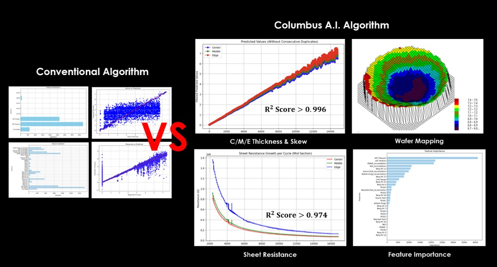

Core Technologies
|
Columbus 1.0.1 (Thickness prediction)
- 실시간 growth 모니터링 - 데이터증강 알고리즘 - 정확도: 99.2% - 적은 데이터로 성능 검증 가능 - 파생된 특성 중요도 |
Columbus 1.0.2 (C/M/E skew prediction)
- 정확도 : 99.6% - 증착 공정의 실시간 예측 결과 확인 - 파생된 특성 중요도 |
|
Columbus 1.0.3 (Mapping)
- 예측 웨이퍼 49개 지점 매핑 - 정확도 : 99.8% - 평균. RMSE : 0.007 |
Columbus 1.0.4 (Process Abnormality detection)
- 이상감지(1웨이퍼 손실에 도전)) - 공정 이상시 타겟 직접변화 실시간 감지 - 통계 기반 SPC 이상 감지 아웃 |

Prediction of Semiconductor Deposition
Columbus 1.0.0은 ALD 알고리즘 학습, ALD 역학, 성장 메커니즘, Langmuir 모델 및 전구체 물리학을 기반으로 하는 데이터 강화 AI 알고리즘입니다. 작은 데이터를 사용하여 ALD 침착을 예측하고 새로운 이상에 대한 즉각적인 대응을 얻을 수 있습니다. 또한 실시간 학습도 가능합니다.
[TaN ALD Real Time growth display]
[TaN Thickness abnormality detection]
기존 장비에서는 ALD 공정에서 박막이 사이클별로 적층되는 그래프와 공정 중 박막에 따라 이상을 검출할 수 있는 그래프가 있습니다. 지금까지 기존 장비는 센서로 이상을 감지하는 데 문제가 있다는 것을 알았지만, 그 근원을 찾을 수 없었습니다. 또한 두께 모니터링, C/M/E Skew, absolutness 감지 웨이퍼 매핑, 전기적 특성, 굴절률, 저항 캡 등을 식별하는데 불가능했습니다.
AI 임베디드 장비를 통해 이전에는 불가능했던 두께 모니터링, C/M/E 스큐, 절대성 감지, 웨이퍼 매핑 등이 가능해졌습니다. 또한, 전기적 특성, 면저항 등을 검출할 수 있는 장비를 개발하고 굴절률 등을 해결할 수 있는 알고리즘을 고도화하고 있습니다.